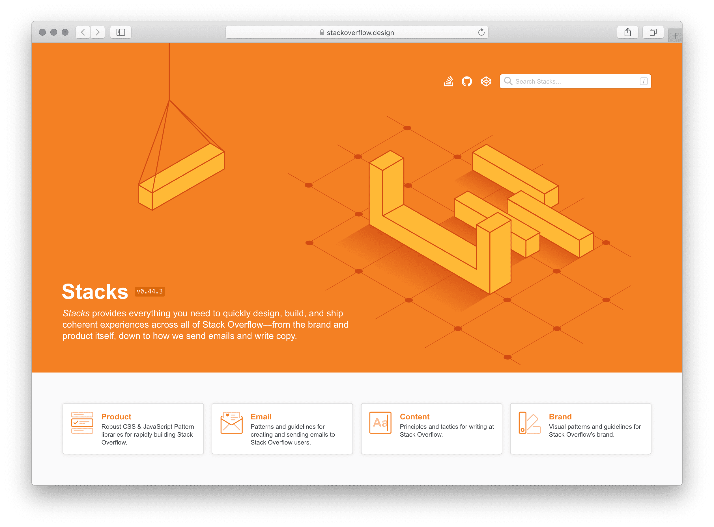
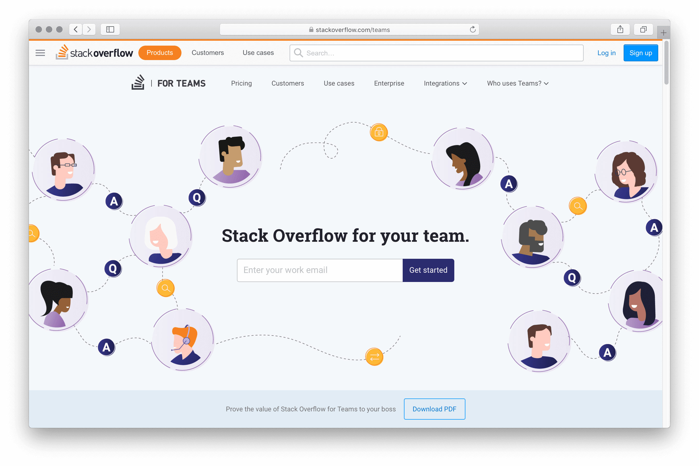

We tested basic layouts before diving into full mockups
We tested basic layouts before diving into full mockups
I joined Stack Overflow in the spring of 2017 as a product designer on their then in-beta product, Documentation. After that, I worked on various Q&A efforts. After that, I’d create and maintain their design system, Stacks.
Documentation was Stack Overflow’s attempt to improve technical reference materials by focusing on real world examples. Instead of simply documenting an API’s methods and parameters, Stack Overflow users could submit real-world examples of those APIs in use, each attempting to create the canonical example and gaining reputation for doing so. Just like answers to questions, examples could be upvoted—the best ones rising to the top.
At the time, I was coming off having written Hum, an iOS app for songwriting. Apple has amazing APIs in their iOS SDK, but many of their symbols lack official documentation. Additionally, this documentation fails to include rich examples, especially community-created examples to show how these methods are actually used. On top of an overall lack of documentation, the APIs often were half-implemented, and required workarounds found deep within Stack Overflow’s question base.
Documentation was an initial success. However, after the gold rush of early adopters adding their own canonical examples, usage began to decline. Myself, product manager Vasudha, and research intern Horyun, were tasked with figuring out how to build the next phase of Documentation.
This meant doing basic research about what Documentation should be, who it’d be for, and what people expected Stack Overflow’s version of Documentation would be. Horyun wrote in depth about her research methodology, and her time at Stack Overflow.
After initial rounds of research, we needed to test actual visuals of what this new version of Documentation might look like.
We tested basic layouts before diving into full mockups
We then moved on to testing mock layouts using pseudo documentation to gather what users valued from documentation around the web.
 In these mockups, we established the page layout while also exploring individual sections that were editable.
In these mockups, we established the page layout while also exploring individual sections that were editable.
 Early explorations on editing allowed for WYSIWYG-style editing of sections.
Early explorations on editing allowed for WYSIWYG-style editing of sections.
 Creating new topics would allow for template selection
Creating new topics would allow for template selection
 A full pseudo layout with everything a topic might have.
A full pseudo layout with everything a topic might have.
 Documentation would support responsive layouts on day one.
Documentation would support responsive layouts on day one.
These explorations all tested very well, but ultimately it would have been too much investment to build what Documentation truly required to succeed. The failure of Documentation changed Stack Overflow’s approach to product development across the company, moving beyond “let’s develop a new product and see how it goes” and into more robust research into product and market fit.

Q&A being the bread and butter of Stack Overflow, I was delighted to be invited to move over to the Community team after Documentation was shuttered.
Since we weren’t building a new product, there were lots of opportunities for improvements, big and small. We discovered new ways of watching tags, filtering questions, making new users feel welcomed, and how to market our products.
Though most users end up on Stack Overflow by directly searching for their problem on Google, many of our users browse our questions lists based on their interests. The community team needed a way to introduce robust sorting, filtering, while showing power users the algorithm behind pre-baked lists like “Newest” or “Active”.
 At the top of each question list, we introduced sorting and filtering.
At the top of each question list, we introduced sorting and filtering.
 If a user changes one of the sorting parameters, we give them the option to save their custom search.
If a user changes one of the sorting parameters, we give them the option to save their custom search.
 Editing a custom search within a modal.
Editing a custom search within a modal.
 Early explorations of sorting and filtering popovers.
Early explorations of sorting and filtering popovers.
Ultimately, a much simpler approach pitched by Lisa Park was best. We shipped a combined, Yelp-y set of filters and sorts in a single expandable view.

A powerful feature for those who browse Stack Overflow is watching tags. By watching tags, we weight questions in those tags and move them to the top of the lists. You can also receive an email digest of questions within those tags in varying frequency. We wanted to help surface its functionality.
 We added some tag management to the sidebar of question lists.
We added some tag management to the sidebar of question lists.
 We surfaced the ability to watch or ignore a tag any time a tag is presented.
We surfaced the ability to watch or ignore a tag any time a tag is presented.
 On the tag page itself, we also added some additional buttons for managing watching a tag.
On the tag page itself, we also added some additional buttons for managing watching a tag.
After launching our code of conduct, we needed a way to show that a user was new to Stack Overflow. This meant exploring ways to unify identy across the product. We shipped the smallest version of this, the hand waving saying they’re a new contributor.

My favorite part of product design is balancing quick wins with long-running redesigns. Simultaneously, the Community team was tasked with converting the site to a responsive layout, adding a persistent sidebar navigation, and refactoring our community’s bunch of themes.
Like a lot of our peers, Stack Overflow built mobile-specific views of our product. At the time, this made more sense than a responsive layout, since unifying on a responsive layout would require a heavy refactor and would force our users to download way more bytes to resource-constrained mobile devices than we’d feel comfortable. However, over the years, maintaining separate mobile experiences became a maintenance burden. Often, the desktop views would receive security fixes and UX improvements that our mobile views would not.
We also introduced a left navigation to the side of all Q&A experiences. As we looked at introducing Teams in the context of Stack Overflow it became obvious that we needed to review our overall information architecture. Fellow designer Donna covered the details and rationale in her blog post. By adding the left nav we were able to scale our navigation beyond the header, allowing us to convert a larger set of pages to a responsive layout.
While building new features, even ones that should be quick wins, theming was a consistent source of frustration to the product team. Like the early days of Reddit and MySpace, the themes varied wildly in their technical and visual execution. Some themes had rich illustrations, custom badges and image sprites, custom buttons, headers, and even animation. Theming a community was used as a test project for some new designers, and an exercise while onboarding others to the team.
I was tasked with figuring out how to unify the elements of a community that could be themed, allowing some themes to become more expressive, while others would be reined in. This required auditing all our CSS and radically simplifying how these theming variables are passed around our codebase. To put it politely, our CSS bundles had grown organically over the years. Unifying our themes was a worthy opportunity to refactor our theming CSS. We could ship a more consistent theming experience that wouldn’t get in the way of more rapidly shipping features.
With community theming as an entry into systems work, I began to do a lot of thinking about what a potential design system might look like at Stack Overflow.
Toward the end of my time at GitHub, Primer had introduced a set of “utility” CSS classes. These were tiny classes that modified individual CSS properties. Since I’d been writing semantic classes for nearly a decade, I approached them with some skepticism. I quickly changed my mind after using a small set of utility classes. Designers and engineers didn’t need to worry about where to place CSS or how to extend existing components (if they existed)—we could just chain together classes in the view itself. Fixing a bug in one context meant we’d be much less likely to introduce a bug elsewhere in the product, since these utility classes were scoped only to that element on the page you were modifying.
Taking inspiration from Tailwind, Tachyons and Basscss, I created a set of atomic utility classes that could express the entirety of the CSS spec without having to introduce any redundant CSS. This set of immutable atomic classes made for an incredibly flexible entry point to a design system.
John Polacek has the greatest argument for atomic CSS that I’ve ever seen. This slide deck is just so good, I think you should stop reading this post and check it out immediately.
Atomic CSS was a wildly different entry point to a design system. Other failed design system efforts focused on cataloging existing components in hopes of replacing them as soon as possible. An atomic CSS library could be used by designers and engineers immediately.
Manager:
— Allison Grayce (@allisongrayce) August 31, 2018
“Oooh a design system! We need one!”
Designer:
“Right! I’ll need a team dedicated-“
Nope.
“Ok one designer & a dev to build the-“
Nope.
“Ok a couple days blocked off-“
Nope.
“Ok I’ll try to do it when I can.”
Excellent!
*UI toolkit has only buttons, forever.*
Design systems often initially have trouble scaling beyond simple button components. If your organization recognizes the value of a design system, moves beyond to things like navigation patterns. These components are commonly too rigid, and teams have too little resources to provide for every edge case. This leads to engineers and designers being frustrated with their technical constraints, abandoning the system altogether.
Chaining together our atomic classes allowed folks to build components that didn’t yet exist, and easily extend the components that did. Every component is designed in the perfect vacuum of an empty white page. As soon as those components are placed next to other components or different layouts, it’s often the case that a component may actually need a drop shadow, or a slightly different shade of gray as a background.
I was met with similar skepticism that I’d felt at GitHub as a consumer of Primer. I had to pitch shifting our front-end culture from a decade’s worth of traditionally-scoped BEM-based CSS to our new bundle of atomic classes. Ultimately, the benefits of a fixed, immutable CSS bundle would sell our bottomline-conscious engineers on our architecture team. Meticulous documentation further convinced engineers building their first features atomically. Designers got on board after a few demos where we just sat down for a half an hour and implemented their in-progress mockups.
Personally, it took me actually using an atomic CSS library to understand that it’s a worthy approach, and our crew at Stack Overflow was no different.
[[demo difference between atomic and traditional css]]
Once the designers were on board, we called the design system Stacks. We purchased our domain stackoverflow.design and released the first versions of our design system documentation on GitHub Pages. Eventually, as the needs of our documentation grew, we switched to the absolutely incredible Netlify.
Netlify allows for way more flexibility, allowing us to rely on custom Jekyll plugins for things like inserting icons from our icon set. It also allows for their absolute-killer feature—branch previews. Every pull request we have on our design system is matched by a preview URL, allowing us to try wildly different ideas, making sure anyone of any technical skill level at Stack Overflow and our open source community can preview our new features.
At any time, users can preview all our changes we’ve got queued up for release by visiting develop.stackoverflow.design. Every release is accompanied by a product development-wide email with release notes.
Now, the problem with atomic CSS is you often repeat yourself chaining together pretty verbose strings of classes to create simple things like buttons. These were the first things we turned into components. This list quickly grew into form elements, tables, and links. Very quickly Stacks began taking shape as a true design system. Of course, any one of these components could be overridden using atomic styling. This is incredibly important for those edge cases that the design system couldn’t reliably predict or guard against in the first place.
We chose a modified BEM approach, for historical reasons. Our components are namespaced with the s- prefix. s-btn applies initial button styling, while modifiers are expressed as s-btn__primary. If there are child elements, they’re expressed as s-btn--number and so forth. This pattern has suited us well, since when you know the internal logic of the class naming system, you can tell at a glance how the markup is structured by the CSS alone.
 A small subset of our original components
A small subset of our original components
Eventually, each of our components will have stock interactions provided by a corresponding JavaScript controller. On Stacks, we chose Stimulus as a dependency for our handing events, and assigning data attributes across our markup, regardless of if it’s coming from legacy views, the odd angular view, or via AJAX. Regardless of how our DOM is loaded, our Stimulus-powered components will have the interactivity engineers and users expect.
Mostly, this just means that certain components have built-in logic for showing and hiding. In the case of our popovers component, it allows our engineers to assign positioning, wire up the originating element, and handle closing events.
Our Stimulus controllers are written using TypeScript that is compiled to vanilla JS. All credit goes to three engineers, all named Ben. Benjamin Dumke-von der Ehe vetted and chose Stimulus as a framework. He also wrote our first controllers and figured out our deployment strategy. Benjamine Kelly wrote our popovers component and helped further our API design patterns. Benjamin Hodgson helped convert our JavaScript controllers to TypeScript.
At GitHub, I learned the value of a system-wide icon set. Stack Overflow was no different. Users would be shown the same consistent metaphor across the product. We’d deliver these icons as SVG, directly injecting them into the page and allowing for their colors to come directly from the text color of their parent. I took the same approach at Stack Overflow with some important modifications.
Our icons are drawn at native sizes of 16px within an 18px frame. We also have smaller variations of most our glyphs at 12px within a 14px frame. The API for adding them to the view is simple. We call @Svg.IconName. Optionally, we can add any classes that we need @Svg.IconName.With("js-target d-flex").
Additionally, we can pass @Svg.IconName.With("native") to allow any native colors shine through. Some of our icons look like rich emojis unless we override them with the parent text color. This allows us to ship features like reactions.
In the future, we plan to deliver spot illustration versions of most of the metaphors in our icon set. This will enable our metaphors to scale from 12px up to 128px, adopting the appropriate aesthetic at the proper scale and pixel-fitting.
The icon set is an open source repo on GitHub.
We borrowed heavily from Tailwind when designing the class names for conditional classes. Since Stack Overflow is transitioning to responsive views across the product, we needed a way to quickly override styling at various breakpoints. We offer a large, medium, and small breakpoints. These pixel values have been abstracted, allowing folks to use predefined max-width media query breakpoints represented by t-shirt sizes. A common example would be to apply .md:fd-column to a flex container with d-flex. This means, “At the medium breakpoint and smaller, switch the grid from columns to rows by applying .fd-column.”
Additionally, we offer conditional classes for hover, focus, and printing. For print, this often means adding p:d-none, simply hiding an element when printing.
Like most design systems, Stacks started as a side project. In between normal product design feature work, I was first able to systematize our icon set. I was then able to experiment with atomic CSS classes and begin documenting them in a private repo. This allowed me and other collaborators interested in the design system to share our ideas about how these classes would be named, and how folks might interact with any APIs we’d offer.
Just prior to when frontend work on our newest flagship product, Teams, was slated to begin, Stacks dropped its first versions into production. This allowed each team assigned to building our new product to rapidly build the onboarding, questions, and admin views using our fixed atomic bundle. No new CSS had to be written or shipped—we only needed to chain our atomic classes together in the view themselves. Designers could assemble user interfaces in Codepens before the backends were ready.
Stacks proved itself as a force multiplier very quickly in building the product, but soon after was put to the test in our marketing pages. Entire suites of marketing pages launched to talk about Teams without shipping a new line of CSS.
For every hour that I’d spent systematizing things with Stacks, each engineer got at least an hour back. Stacks very quickly paid for itself, allowing me to more effectively argue moving from working as a product designer on specific features to working on Stacks itself. After a year of working on Stacks in a part-time fashion, I was able to convince management of its value. As of January 1, 2019, I’m Stack Overflow’s Design Systems Lead.
Stack Overflow has traditionally employed “full stack” designers, meaning each designer we hired was also able to build and ship their own frontends. We’ve since started diversifying our skill levels. Since then, our design system couldn’t just include code. At the time Stacks was built, we were largely standardized on Sketch. While I absolutely adore Sketch, I found the distributed document model of Figma incredible for collaboration, especially after a brief stint freelancing for Black Pixel. Many presentations, including those with our clients were run using the Figma document itself. Since design systems is largely about having a single source of truth, I found Figma to be the closest equivalent to that. You can trade a single link back and forth like a Google Doc, and always be ensured you’re seeing the latest and greatest.
It took a lot of internal evangelizing to switch to Figma, but since delivering all our shared components from our design system to components in our design tool, the case was much easier to make. Product designers, regardless of their ability to code, can now drag components from our codebase to their canvases, quickly assembling their features for handoff to engineers.
We have a long road to go on implementing Stacks across Stack Overflow. Sustained refactor has to happen in order to get our code coverage to the point where we can make larger, sweeping changes. Like atomic classes being an entry point into a design system, our design system is an entry point to a wider redesign of our product.
Sadly, it’s a common refrain that Stack Overflow isn’t a friendly product. While most of these issues can and should be solved by hard choices in Stack Overflow’s set of features, we can’t discount the effect that aesthetics can have on a product. Beyond strong community moderation and proper opinionated features like flagging, and automatic sentiment analysis, we can look at our product systemically to change our users’ overall perception.

A note for our users that may be reading this—this is merely an exploration of the profound effect of what redesigning the key elements within our design system can result in. Here we’ve changed the typeface, the overall padding scale, font sizing scale, and corner radii.